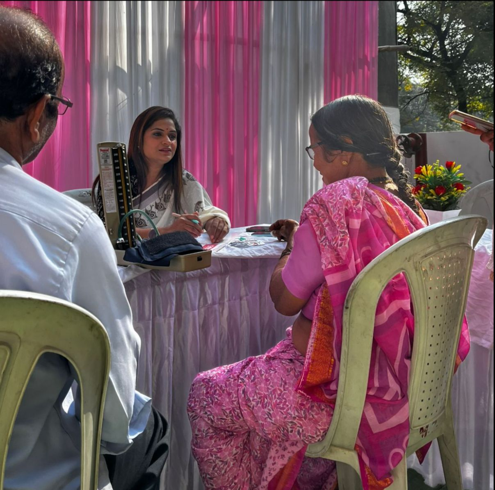
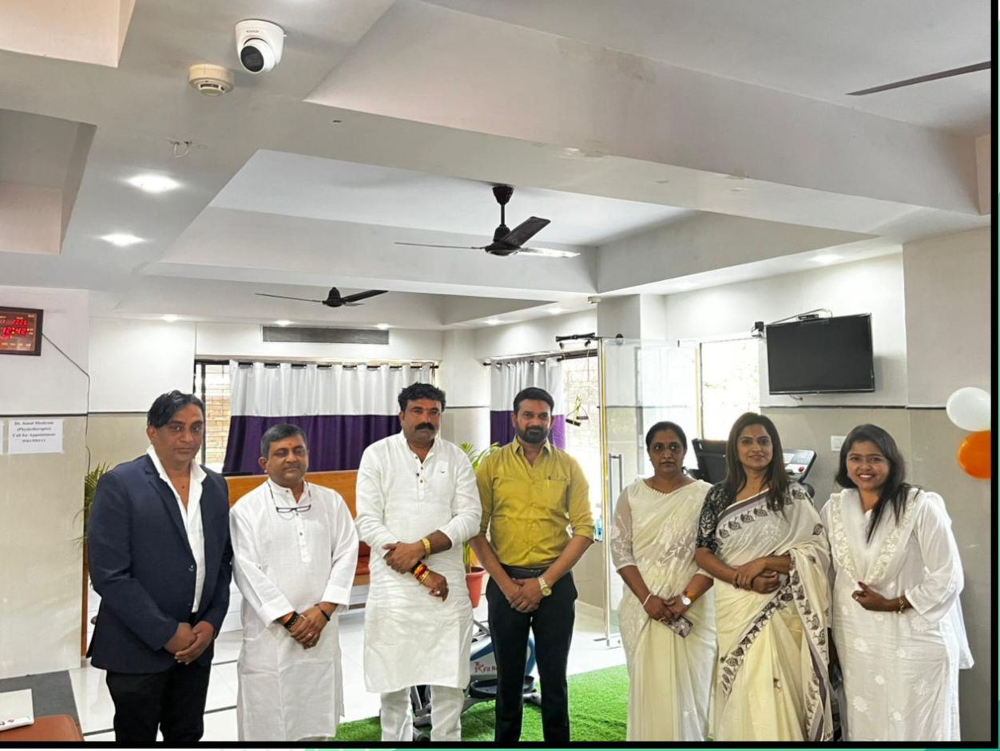
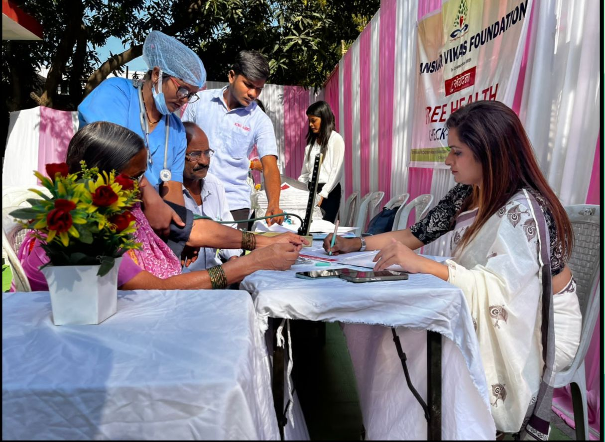
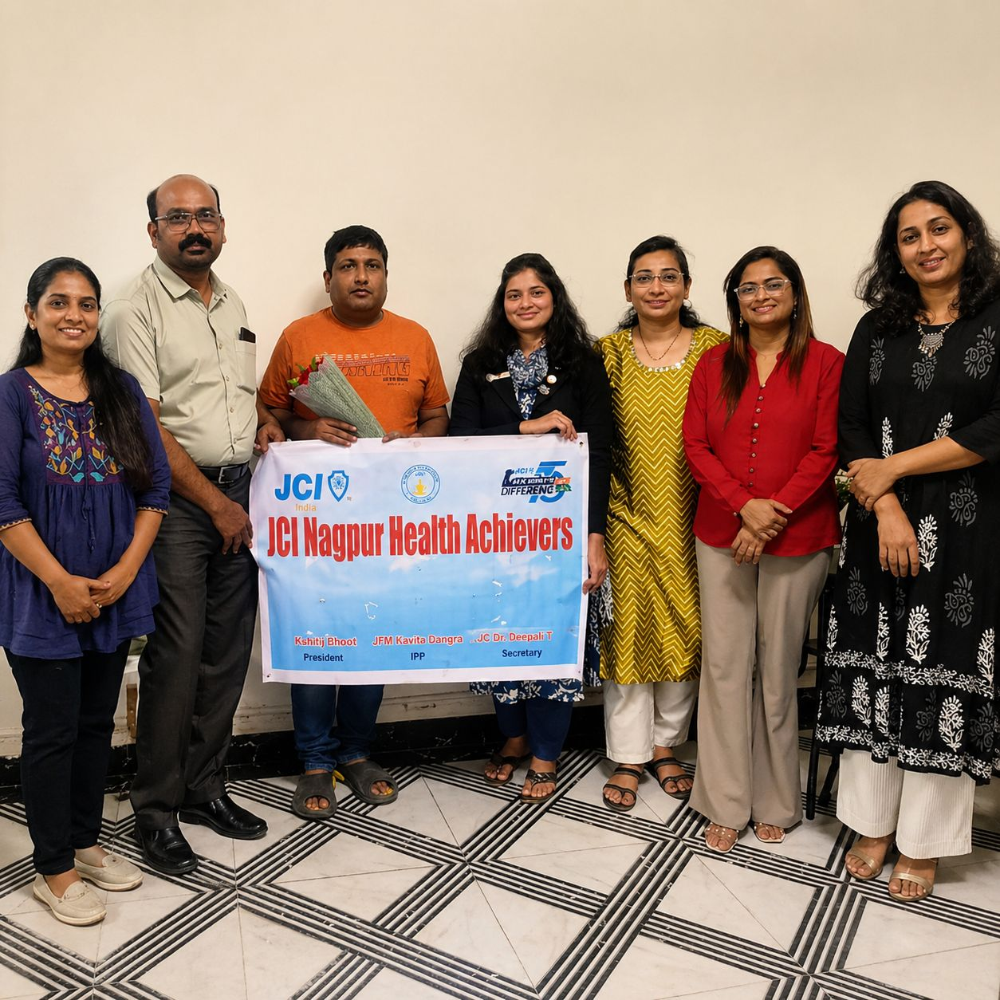
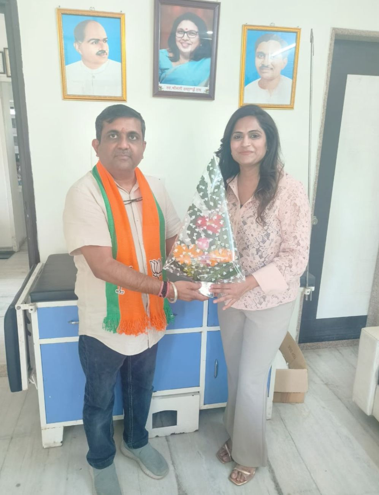

Holistic programs designed to empower communities and create sustainable, lasting change across Maharashtra.
Accessible and affordable healthcare services for communities that need it most.
Promoting educational access and improving literacy rates across all age groups.
Vocational and professional training to enhance employability and self-reliance.
Supporting sustainable income generation and economic empowerment initiatives.
Compassionate care and welfare programs for animals in rural communities.
Reproductive health education and family planning awareness programs.
Championing rights and providing legal aid to vulnerable populations.
Clean water access and sanitation improvement in underserved areas.
Protecting natural resources and promoting sustainable environmental practices.
Dedicated programs empowering women through education, health, and economic support.
Improving basic infrastructure and living conditions in rural Maharashtra.
Nurturing the next generation with skills, values, and leadership opportunities.

Our NGO Sanskar Vikas Foundation organized a health camp exclusively for women.
Free check-ups, gynecological consultations, anemia screenings, and hygiene awareness were provided.
We organized a life-saving blood donation drive with strong community participation.
Certified blood banks ensured safety while donors contributed generously.


Free eye checkups, screenings, and spectacles for underprivileged communities.
Patients needing surgery were referred to partner hospitals.
Sanskar Vikas Foundation works to empower differently-abled individuals through skill training, healthcare support, and inclusive development initiatives.
We promote independence, dignity, and equal opportunities, helping them lead confident and fulfilling lives.


Free checkups and medicine distribution celebrating service and unity.
Hundreds of beneficiaries participated.
Comprehensive socio-economic surveys inform our program design and ensure our interventions address real community needs.
Rigorous M&E studies assess the effectiveness and impact of all programs, helping us continuously improve.
We empower individuals and communities through targeted teaching and training to develop their skills and capabilities.
Strategic guidance and management support ensure efficient, effective execution of all our programs and projects.
We advocate for and implement changes that address social inequalities and improve overall community well-being.
We work closely with PRIs, CBOs, social activists, and government departments for maximum on-ground impact.